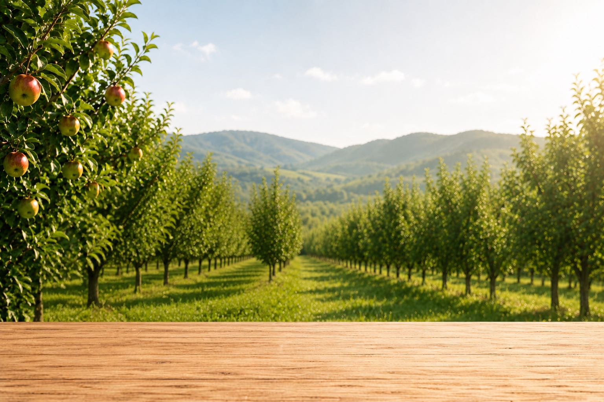

Know what happened
Log orchard work when it happens and keep a timeline you can return to weeks, months, or seasons later.
Orchard record keeping
RootedField replaces scattered notebooks, text messages, and spreadsheets with searchable orchard records built around trees, activities, tasks, irrigation, observations, and harvests.

Log orchard work when it happens and keep a timeline you can return to weeks, months, or seasons later.
Activities can stay connected to the trees and orchard context they belong to instead of living as isolated rows in a spreadsheet.
Filter and review records without flipping through notebooks or trying to remember which file contains last season's notes.
Designed around orchard work
The goal is not to make growers document everything. RootedField gives important orchard work a consistent home so the information is available when it becomes useful later.
See plans and pricingRootedField supports individual tree information, orchard activities, observations, watering history, tasks, harvest activity, health information, and related operational records.
Yes. RootedField is designed to make tree and orchard information easier to find and filter than traditional paper notes or disconnected spreadsheets.
No. RootedField focuses on orchard operations and tree records rather than bookkeeping, payroll, or tax accounting.
Yes. Team access is available on supported paid plans.
A clearer orchard
Start with the trees and work you need today, then build useful history season after season.